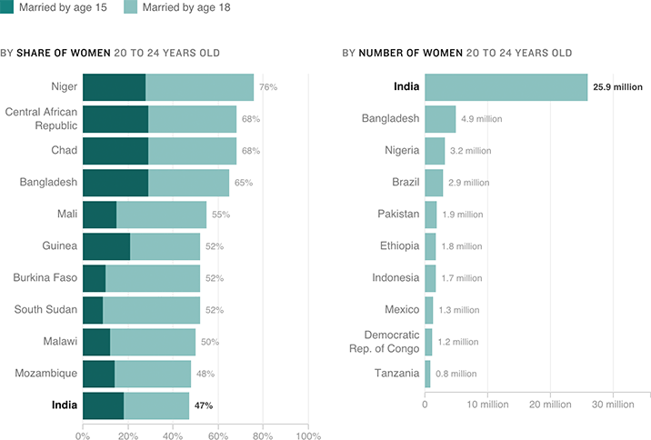

Child Marriage Around The World
A child bride is defined as any girl married before she turns 18, though many are years younger. India ranks 11th in this chart showing child marriage rates but has the world’s highest number of child brides because of its large population.
